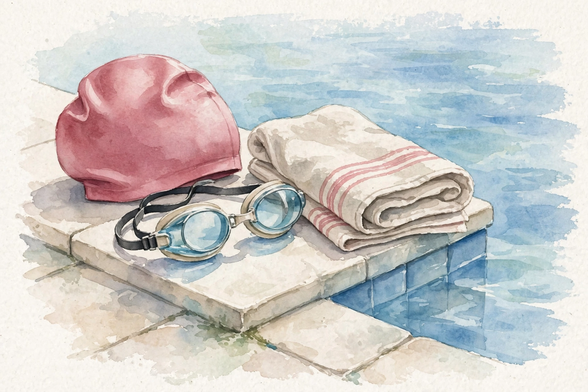
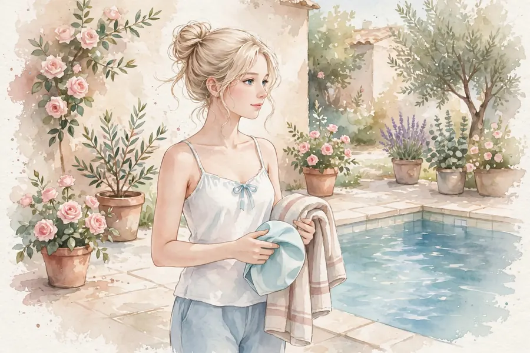

プール・海の日の前後のヘアケア

プールや海に行った日は、髪の手触りがいつもと違う、と感じる方が多いです。施術の現場でも、夏の時期にはそうした相談が増えます。この記事では、その日の前と後でできる、一般的なケアの手順を整理します。
出かける前：濡らす・まとめる・遮る
出かける前の工夫として知られているのが、あらかじめ髪を真水で濡らしておく方法です。乾いた髪よりも、すでに水を含んだ髪の方が外の水を取り込みにくい、という考え方に基づく生活の工夫です。また、髪をまとめておくと、水の中での絡まりが減ります。ゆるく編む、結ぶなど、場面に合わせたまとめ方を選んでください。
日差しへの対策として、帽子も有効な場面があります。水から上がった休憩の時間は、帽子や日傘で髪と頭皮を遮る時間に使えます。髪と頭皮の日差し対策については、別記事でも詳しく紹介しています。
水から上がったら、まず真水ですすぐ
プールや海から上がったら、シャワーで髪全体を真水ですすぎます。すぐにシャンプーができない環境でも、このすすぎをしておくと、その後の洗い方がスムーズになります。すすぎのときは髪をこすらず、水を通すように流すのが基本です。
帰宅が遅くなる日は、タオルで水分を取り、髪をほどいて乾かしておくと、もつれが固まりにくくなります。濡れた髪を結んだまま放置すると、跡と絡まりが残りやすくなるため、ほどいておくことをおすすめします。
帰宅後はいつもの洗髪を、丁寧に
帰宅後の洗髪は、特別なアイテムを使うよりも、いつもの手順を丁寧に行うことが基本です。予洗いを長めに取り、シャンプーの泡を全体に行き渡らせ、すすぎは場所ごとに確認します。トリートメントは毛先を中心に、いつもの量から始めてください。
その日の髪の手触りがいつもと違う場合は、数日かけて様子を見るのが通常です。頭皮のかゆみなど気になる状態がある場合は、専門家に相談してください。特別な日こそ、基本の手順に戻ることが大切だと、現場では感じています。
プールと海では、水の性質が違います。プールは消毒の成分を含む水、海は塩分を含む水です。どちらも、上がった後の真水でのすすぎが基本になる点は共通しています。施設のシャワーの混み具合も考えて、帰宅までの段取りを先に決めておくと、当日の動きがスムーズです。
子どもの髪も基本は同じです。水から上がったら真水ですすぎ、帰宅後に丁寧に洗う。子どもの場合は髪が細く絡まりやすいので、すすぎのときに指でほぐしながら水を通すと、後の洗髪が楽になります。家族で出かける日は、大人のケアと子どものケアを同じ流れに組み込むと、手間が分散できます。
水着やタオルと同じように、髪の準備も持ち物のうちです。替えのタオル、目の粗いコーム、予備のゴム。この3つがあると、水から上がった後の段取りが格段に楽になります。帰宅後の洗髪まで見越して荷物を組むのが、段取り上手です。また、日焼け止めを髪の分け目まわりに使う方もいますが、帰宅後の洗髪では、その分も含めて丁寧に洗う必要があります。使う範囲と落とす手順は、セットで考えてください。特別な日のケアは、前後の段取りまで含めて設計するものです。
帰宅後の洗髪では、シャンプーの泡をいつもより長めに行き渡らせる意識も大切です。特別な日は、時間の配分を少し変えるだけで、手順そのものは変えなくて構いません。
翌日の髪の感触も、確認しておきたい点です。手触りがいつもに戻るまで数日かかることもあります。その間は、洗い方を丁寧に保ち、様子を見てください。焦って特別なケアを重ねる必要はありません。
準備の物は、前日の夜にそろえておくと当日の朝が慌てません。

セラフィナ「プールの日は、前・中・後の3段構え。帰ったら基本の手順に戻ろう」